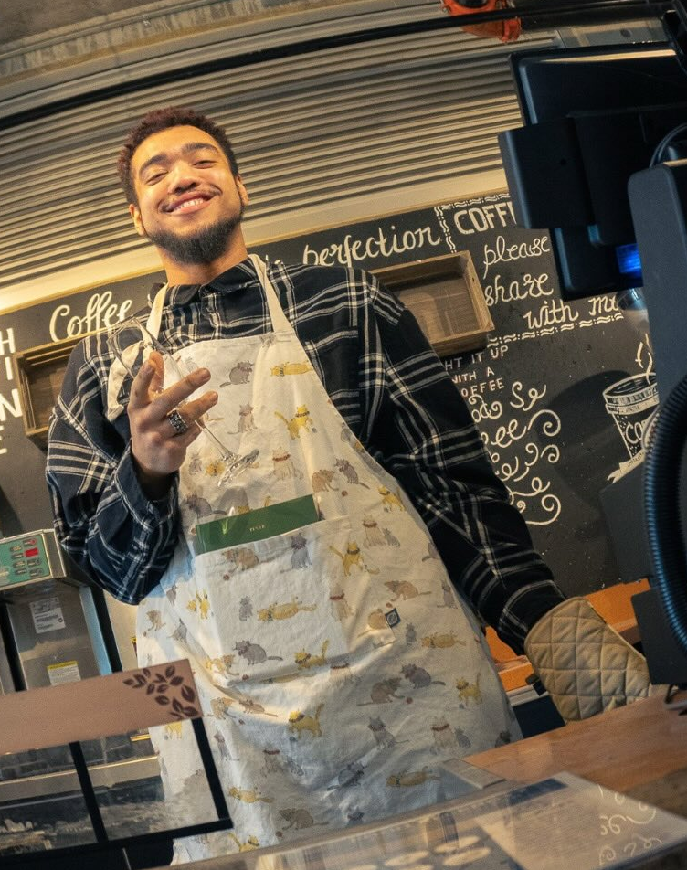
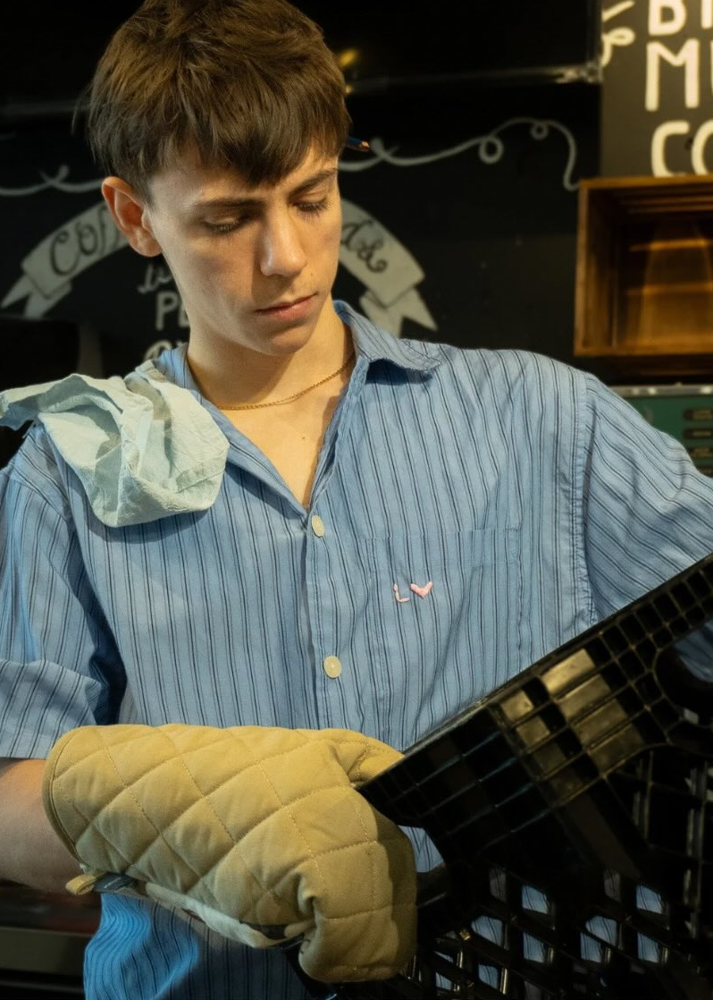
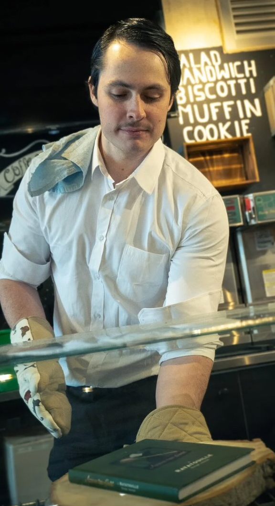

meet the cast
the people who make the magic happen (and the messes)
your host
maddie
the heart and soul of set the table
Like cake without sprinkles: you can't have Set the Table without Maddie! With 1 month of experience in live television, she lends the show its bright, easy-going energy. Whether interviewing famous actors or masked vigilantes, she can make any guest feel comfortable and excited to compete.
the judges
mickel
the iron stomach
You'll see him appear frequently throughout our show, especially to taste our guests' most abhorrent culinary concoctions. Suffice to say, there's no stomach more durable than his.

darius
the charmer
No one is immune to the charms of Darius. His calm and collected nature have afforded him an excellent track record; he may scrap a few dishes, but they've all been edible!

chaddy daddy
otherwise known as matthew
Chaddy Daddy will have you slitting your throat with laughter! Want a good salad garnish? Try his patented, hand-crushed cheese puffs!

raff
the fancy one
Our final (and fanciest) judge. His ability to serve looks is matched only by his ability to serve verdicts on our guests' food.
featured guests
liam hamilton
episode 1: red carpet craving
Titles like Elliot Marx, Ridge: Part Two, and Call Me on the Phone all invoke shameless industry plant Liam Hamilton. His long and impressive resumé features blockbuster franchises, indie gems, and everything in between.
deevs
episode 2: shake it to the beat!
Did we say you could stop partying? Deevs is an up-and-coming pop sensation with over 50,000 views on SoundCloud. If you like barbecue, you'll love the mocktail he creates for our judges!
sheridan batman
episode 3: superfood!
We know what you're thinking: how did you get Batman to come on a cooking show? Have you ever opened his Instagram DMs? Of course not. You only think about yourself.
dax & tiffany
episode 4: friend or foe?!
Beloved co-stars Dax and Tiffany are the sweethearts of Canada, but here at Set the Table, we don't trust anyone. Some tacos can unite a family; theirs will challenge it.
kendall
episode 5: roast dinner!
Visionary comedian Kendall can cook just about anyone to a good sear, but can she work a plate of our quality, ethically-sourced olives? Comfort can deceive; there's ashes in your nachos.
???
episode 6: bread-er together
Needs no introduction. When they invited us to duel, we had to agree or else compromise our honour. Tune in this Friday to find out who dares challenge Set the Table.